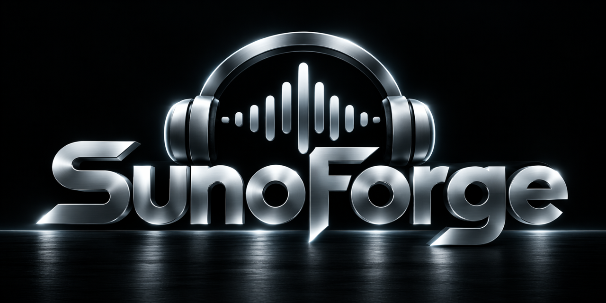
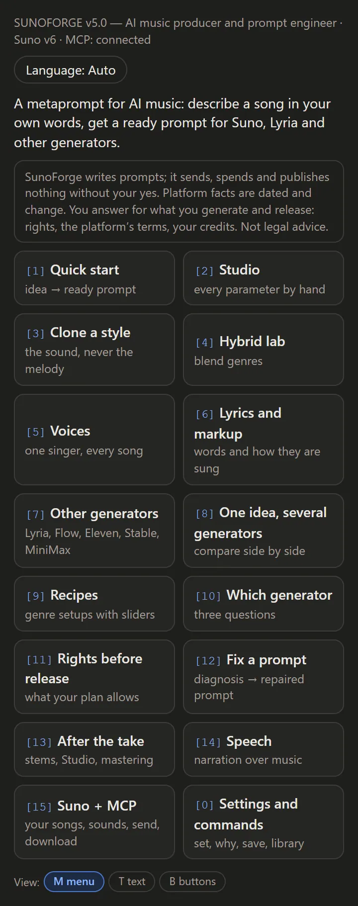
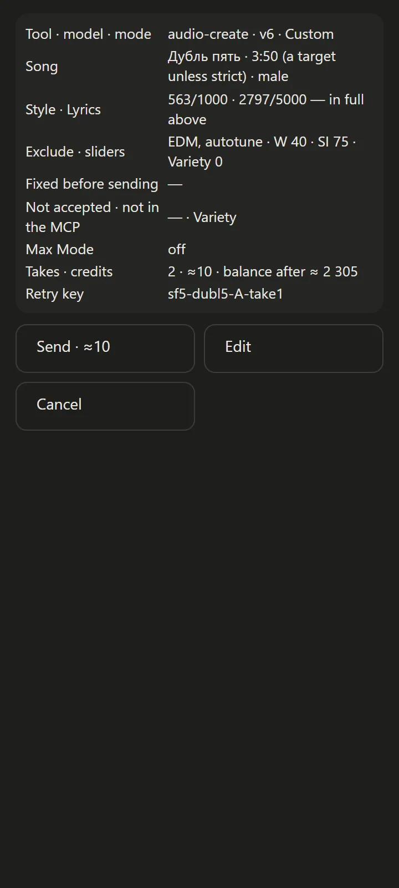
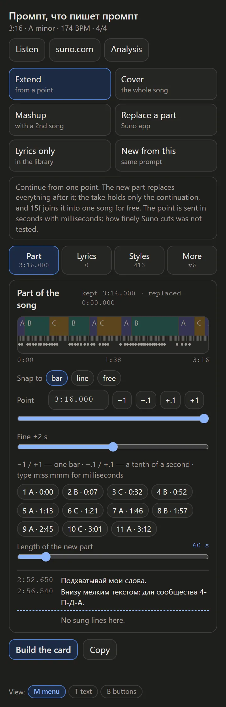

SunoForge
A meta-prompt for AI music. Describe a song in your own words — SunoForge writes the prompt for this song, not a template, and explains why it works. With Suno's official MCP connector it can send it to Suno and work with your songs there; nothing is spent without your yes.
What it looks like



Install in Claude Code
/plugin marketplace add sanic732/SunoForge /plugin install sunoforge@sunoforge
Then open a new chat and type SunoForge. In the Claude app: Customize → Plugins → Add → Upload, with sunoforge.plugin from the release.
Who it is for
- Not a musician? Say it in plain words — "happier", "a younger voice". SunoForge offers a few readings, asks one question, and names what you liked so you learn the words.
- A musician? Key, tempo, structure, sliders, your own melody — the short path, in your terms.